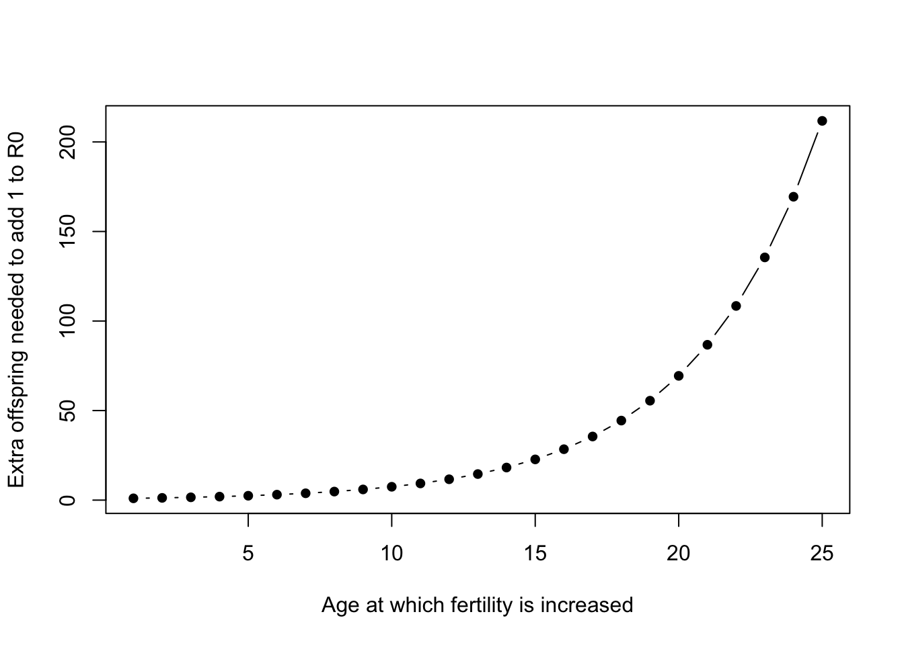
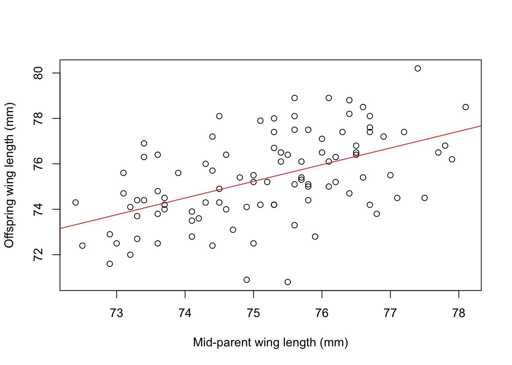
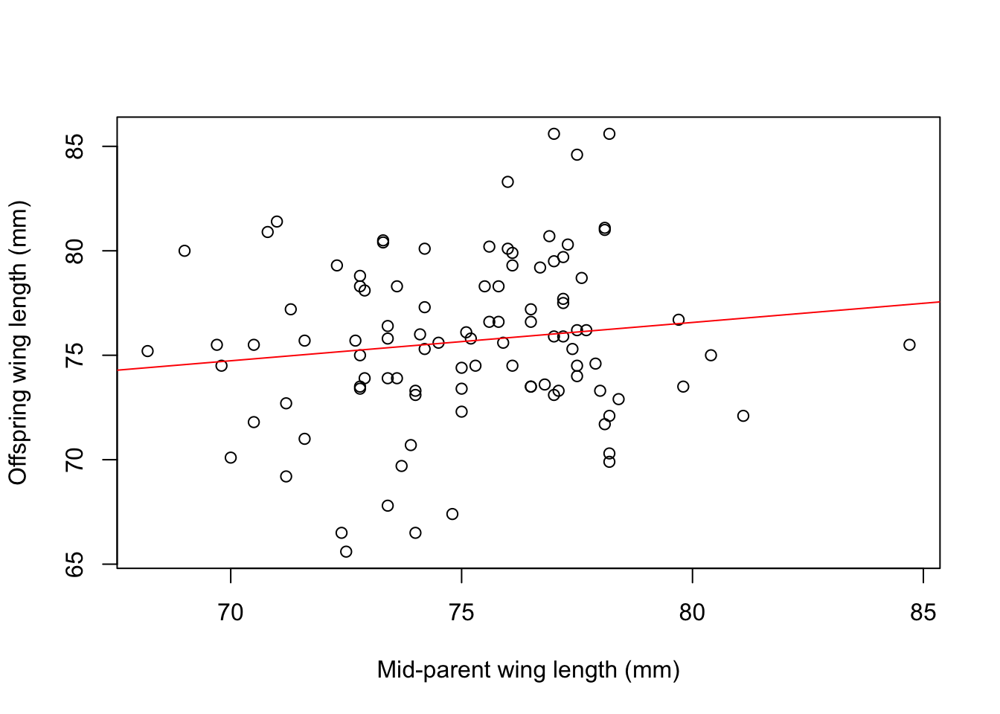

25 Solutions and “take-home” messages
In this section you will find the solutions and/or main take home messages of the practical exercises used in this course.
25.1 How to use this section
Use these solutions to check your reasoning after you attempt the tasks. If your answer differs, focus on the logic rather than the final number.
25.2 Solutions: The blind watchmaker
- Predictions and the default run
With selection on, one example run using Dawkins’ 28-character phrase and 27 possible characters reached the target at generation 66. The number varies between runs: in 5,000 simulated runs the median was 98 generations, and 90% of runs finished between about 60 and 166 generations. Compare this with single-step selection, where you would expect to need about \(27^{28} \approx 10^{40}\) attempts.
- What happens if selection is turned OFF?
Each generation is then a completely new random guess (single-step selection), and nothing is kept from one generation to the next. The output stays random nonsense. The chance of hitting the whole phrase in any one generation is \((1/27)^{28} \approx 8 \times 10^{-41}\), so in practice it never happens.
- Does the number of generations affect whether the target phrase is reached?
Yes. With 100 generations, only about half of runs (about 52%) reach this phrase; with 200 generations almost all do (about 99%). The last letters to be fixed are the slow part: each wrong letter has only a 1 in 27 chance of being right in any one generation.
- Does the speed of reaching the target phrase depend on the length of the phrase?
Yes, but much less than you might expect. Longer phrases take more generations, because there are more letters that all have to be fixed, but the increase is small: “I LOVE SCIENCE” (14 characters) takes a median of about 81 generations, the 28-character weasel phrase about 98, and the 53-character “WITH YOUR FEET ON THE AIR AND YOUR HEAD ON THE GROUND” about 117. With single-step selection, every extra character makes success 27 times less likely.
- How does this simulation differ from real natural selection?
- Natural selection has no long-term goal or target. Here, every phrase is judged by how close it is to a fixed target that is decided in advance. In nature, individuals are “judged” only by how well they survive and reproduce in their current environment.
- The intermediate phrases have no use of their own: “METHINKS IT IS LIKE A WXASEL” is only better because it is closer to the target. In evolution, every intermediate form (for example, each stage in the evolution of an eye) must itself work well enough to survive and reproduce.
- The simulation judges each letter separately, with perfect knowledge of the right answer, and a correct letter can never be lost again. There is no population, no reproduction and no inheritance. Real selection acts on whole organisms in a population, and favourable variants can still be lost by chance.
The important lesson still holds: random variation combined with cumulative selection can produce outcomes that would be impossible by chance alone.
25.3 Solutions: Bug hunt camouflage
- Predictions
Typical good predictions: the average colour will move towards the background colour; it will take longer to catch 10 bugs as time goes on; after switching background, catching will suddenly become easy again, and the bugs will then start to evolve towards the new background. Students who predicted that individual bugs would change colour have met a key misconception (see the genotype question below).
- What happens to the average colour of the bug population with time as you hunt? Was your prediction correct?
The colour evolves to become more similar to the background colour because you (the hunter) find it harder to find these better-camouflaged individuals.
- What happens to your hunting efficiency? Use your measurements.
Your hunting efficiency tends to decrease with time because the bugs are evolving to be harder to see. They are evolving camouflaged colours. In your measurements, the time to catch 10 bugs should increase over the first two minutes, drop sharply when you switch background (the bugs are suddenly conspicuous), and then increase again as the bugs adapt to the new background. The exact times differ between students, because each of you is a different predator, but the pattern should be the same.
- Would you say that the bug population becomes worse or better adapted to their environment?
The population becomes better-adapted to their environment with time.
- Can you explain how this happens?
You (the hunter) kill the most obvious bugs first (i.e. those with contrasting colours to the background). These are the individuals that are not well-adapted to the environment. The survivors have offspring that are similar to them, while the ones you kill leave no offspring. So as time goes on, the population becomes dominated by individuals that are well-camouflaged.
- After simulating in one environment (e.g. poppy field) for a few minutes, pause then switch to another environment. Are the bugs now well- or poorly-adapted to their environment?
Changing the environment means that the individuals are now poorly-adapted to their environment. This is because the individuals now find themselves in an environment that they did not evolve in. Their evolved camouflage does not work so well in a new environment.
- Do the genotypes of individuals change (e.g. with individual age)?
No, individuals’ genotypes are fixed. The change in the population occurs because of selection of individuals to reproduce. Better-adapted individuals are more likely to reproduce.
- Increasing the “max-mutation-step” makes bug offspring less like their parents. How do you think this will influence the speed of adaptation of the bugs?
Increasing the amount of variation in offspring will tend to speed up adaptation. However, there are limits: too much variation can cause maladaptation of offspring. For example, if a parent is well-adapted (perfectly camouflaged), too much variation in offspring could lead to some offspring being poorly-camouflaged and therefore vulnerable to predation.
- Where do you see each of the four conditions in the model? Where does new variation come from?
- Individuals vary in a trait: the bugs differ in colour.
- Individuals vary in reproductive success: bugs that you catch leave no more offspring; survivors may be chosen to reproduce.
- The trait affects reproductive success: colours that contrast with the background are caught first, so they are less likely to survive and reproduce.
- The trait is inherited: offspring get their colour genes from their parent.
New variation comes from mutation: each offspring’s colour genes can differ slightly from its parent’s (the “max-mutation-step” slider). Mutation is not one of the four conditions; it supplies the variation that condition 1 needs.
- Newborn bugs start very small. Could this let some bugs escape for reasons that have nothing to do with their colour? How might that affect the results?
Yes. A newborn bug is hard to see because it is small, whatever its colour, so for a short time it escapes for a reason that has nothing to do with camouflage. This adds chance to who survives and weakens selection on colour slightly. It does not stop camouflage evolving, because every bug is small only briefly and colour still matters once it has grown.
- How does this model differ from a real predator–prey system? Give at least two differences.
Possible answers: there is only one predator, and it does not evolve (although you do learn!); reproduction is asexual, with one parent and no recombination; the population size is fixed, so there is no population growth or decline; bugs do not move or choose where to rest; the only selection is predation on colour, whereas real prey face many other pressures (temperature, food, mates); generations overlap in an unusual way, because one offspring is born each time a bug is caught.
- Optional extension: gene flow and local adaptation
With a small “offspring-distance”, offspring stay close to their parents, so bugs in each patch of background are mostly the descendants of bugs that survived in that patch: each patch can evolve its own matching colour (local adaptation). With a large “offspring-distance”, offspring are scattered across the whole background. This is like frequent gene flow between populations: well-camouflaged colours from one patch keep arriving in patches where they stand out, so local adaptation is weaker or absent. Whether gene flow swamps local adaptation depends on how much movement there is compared with the strength of selection.
25.4 Solutions: Geometric growth
You can find the completed Excel file here.
Take home messages:
- The rate of exponential/geometric growth depends on the population growth rate.
- Lambda (\(\lambda\)) values \(<1\) lead to a exponential decrease, while values \(>1\) lead to exponential growth. A \(\lambda\) of 1 indicates no change.
- Exponential growth is unlimited. This is unrealistic because very soon competition (what Darwin called “The struggle for existence”) will soon take effect as the population runs out of space or resources. Nevertheless, the model is useful and realistic for some limited situations (e.g. early population growth for new invaders)
- Growth trajectories can be plotted on the natural scale or on a log scale. Exponential growth (or decline) plotted on a log scale is a straight line. This could be useful to infer biological processes (or the lack of them). For example, exponential growth in population size indicates that there are no forces currently limiting the population (e.g. predators/competition/management actions).
- The slope of the population growth on the natural log scale can tell you what \(\lambda\) is. The “opposite” of ln is exp, so you can ask Excel to calculate
=EXP(slope).
Answers to the task:
- Steps 1-2: with \(N_0 = 10\) and \(\lambda = 1.1\), the population reaches 16.1 at \(t = 5\) and 67.3 at \(t = 20\). Plotted against time, N curves upwards ever more steeply.
- Steps 3-4: plotting ln(N) against time turns the curve into a straight line. A constant proportional increase each time step becomes a constant absolute increase on the log scale.
- Step 5: with \(\lambda = 1.2\) the curve rises faster (steeper straight line on the log plot); with \(\lambda = 0.8\) the population declines towards zero (straight line sloping downwards on the log plot); with \(\lambda = 1\) the population stays at 10 (flat line). \(\lambda = 1\) is the boundary between growth and decline: the population exactly replaces itself each time step (\(R_m = 0\)).
- Step 6: the trendline slope is 0.0953 = ln(1.1), and
=EXP(0.0953)returns 1.1, the \(\lambda\) you used. The slopes for \(\lambda\) = 0.8, 1 and 1.2 are -0.223, 0 and 0.182. If you get a different slope, check that you fitted the trendline to thelogN(natural log) column, not to N on a logarithmic axis. - Geometric series: \(N_5 = 10 \times 1.1^5 = 16.1\), the same as the spreadsheet. After 900 generations, \(N_{900} = 10 \times 1.1^{900} \approx 1.8 \times 10^{38}\). That is absurdly large (far more individuals than there are atoms in a human body, around \(10^{27}\)), which shows why unlimited geometric growth cannot continue for long in reality.
Answers to the questions:
- Constant growth rate: the population is multiplied by the same factor each time step, so it grows by the same proportion each step and by ever-larger numbers. For example, with \(\lambda = 1.1\) the population grows by 10% each step: from 10 to 11 in the first step, but from 61.2 to 67.3 between steps 19 and 20. It also doubles at a constant interval: \(\ln 2 / \ln 1.1 \approx 7.3\) time steps.
- Why unrealistic: it assumes unlimited resources and space, no density dependence (competition, predation or disease do not increase as the population grows), and a constant \(\lambda\) every year (no environmental variation). Real populations eventually run out of resources and growth slows.
- Where it might be suitable: the early stages of growth when a population is small relative to its resources, e.g. an invasive species newly arrived in a suitable habitat, a population recovering after a crash or after protection (e.g. some seal or raptor populations), or bacteria in fresh culture medium.
- Decline of 25% per year: this means \(\lambda = 0.75\), so \(N_4 = 800 \times 0.75^4 = 253.1\), i.e. about 253 individuals.
25.5 Solutions: Estimating Population Growth Rate
You can find the completed Excel file here.
- What does the log-transformed plot of population size over time tell you about the population’s growth trend? Does the population grow exponentially?
- The log-transformed plot should show a straight line if the population is growing exponentially, because the natural logarithm of an exponentially growing population will linearise the exponential curve. The slope of this line represents the natural log of the population growth rate \(log(\lambda)\). If the line has a positive slope, it indicates the population is growing; if it’s flat, the population is stable; and if it’s negative, the population is shrinking.
- In this exercise, assuming \(\lambda > 1\), the population is indeed growing exponentially, which will be reflected by a positively sloped line in the log-transformed plot.
- What is the estimated population growth rate (\(\lambda\)) based on your regression analysis?
- From the linear regression performed on the log-transformed data, the slope of the line corresponds to \(log(\lambda)\). To find \(\lambda\), exponentiate the slope: \(\lambda = e^{\text{slope}}\).
- With the data provided, the slope of the regression of ln(N) on year is about 0.070 (0.0696), so \(\lambda = e^{0.0696} \approx 1.07\). The population grows by about 7% per year. (Small differences in the third decimal place are fine; they come from rounding in the trendline label.)
- In fact, the data were simulated with an average \(\lambda\) of 1.09, with random year-to-year variation in \(\lambda\) and measurement error in the counts. Our estimate is lower than 1.09 for two reasons: year-to-year variation in \(\lambda\) lowers long-run growth (growth follows the geometric mean of \(\lambda\), which is smaller than the arithmetic mean), and with only 25 years of noisy counts the estimate has considerable sampling error. This is a useful reminder that an estimate from real data is never exactly the “true” value.
- What assumptions does this model make? Discuss any potential real-world factors that might affect the accuracy of your estimate for \(\lambda\).
The model assumes a constant growth rate over time. It does not account for environmental changes, resource limitations, or carrying capacity (which would lead to logistic rather than exponential growth).
The model also assumes no immigration, emigration, or catastrophic events that might disrupt the population trend.
Environmental variability: In reality, populations experience fluctuations due to weather, food availability, disease, and other stochastic factors, which can cause growth rates to change over time.
Density dependence: As populations grow larger, they may face resource limitations or increased competition, leading to a slowdown in growth, which would not be captured by a simple geometric model.
Measurement errors: In practice, the measurement of population sizes may not be precise, as discussed earlier with the introduction of noise. These errors can lead to inaccuracies in estimating \(\lambda\).
25.6 Solutions: Stochastic population growth
You can find the completed Excel file here.
Take home messages:
- Population growth rates are unlikely to be constant through time.
- Environmental stochasticity will cause changes through time in vital rates (birth/death) which will influence \(\lambda\) (and \(r_m\)).
- We can model environmental stochasticity using a distribution of population growth rates instead of a single deterministic value.
- We then can randomly draw growth rate values from this distribution for each time-step in a population projection.
- The “spread” or uncertainty in the population size at a future time point depends on (i) the spread (variance) of the distribution and (ii) the amount of time elapsed.
- We can repeatedly simulate a population projection (e.g. in R, or more laboriously in Excel) to get a feel for the likely fate of a population. E.g. “what percent of the projections show extinction within 50 years?”.
- We can use this relatively simple and “unrealistic” model to nevertheless get an intuition about general trends in population dynamics and extinction risk.
- Extinction probability increases as (i) initial population size decreases; (ii) variance increases; (iii) growth rates decrease; (iv) the time frame increases.
25.7 Solutions: Basic logistic population growth
You were asked to use the Excel sheet to explore the logistic growth model by changing its parameters and examining the two graphs.
25.7.1 Graph 1: Population size through time
Step 1 (default settings: Initial N = 10, \(r_m\) = 0.8, \(K\) = 200). The maximum population size is the carrying capacity, \(K = 200\). The population grows quickly at first and then slows as it approaches \(K\), giving an S-shaped (sigmoidal) curve. It reaches about 99% of \(K\) after around 9 time steps.
Step 2 (\(K\) = 300). The maximum population size increases to 300, but the time taken to approach it stays roughly the same (around 10 time steps). \(K\) sets where the population ends up. It does not change how fast it gets there.
Step 3 (\(r_m\) = 0.4). The population grows more slowly and takes roughly twice as long to approach \(K\) (around 18 time steps rather than 9). The time taken to approach \(K\) is related to \(r_m\): as you increase \(r_m\) this time decreases, and halving \(r_m\) roughly doubles it.
Step 4 (\(r_m\) = 1.8). The population overshoots the carrying capacity (to about 218), then oscillates around \(K\) with damped oscillations that gradually converge on \(K\). It is a common misconception that \(K\) is the maximum population size. When \(r_m\) is markedly greater than 1, the population grows so fast that it can exceed \(K\).
This means that if a population has even a moderate population growth rate and density dependence, it can fluctuate in numbers without any extrinsic factor (like weather) acting.
Step 5 (higher \(r_m\)). As you increase \(r_m\), the nature of the oscillations changes. In fact, this is predictable:
- \(r_m < 1\): the population approaches \(K\) smoothly.
- \(1 < r_m < 2\): damped oscillations of decreasing amplitude around \(K\).
- \(2 < r_m < 2.57\): stable cyclic oscillations around \(K\) (stable limit cycles). The population first bounces between two values (a 2-point cycle, e.g. \(r_m\) = 2.1 or 2.4), then between four values (a 4-point cycle, e.g. \(r_m\) = 2.5), and so on.
- \(r_m > 2.57\): the population fluctuates chaotically, with no repeating pattern (e.g. \(r_m\) = 2.8, 2.9 or 3.0).
- \(r_m\) above about 3: the population overshoots so far that the next time step gives \(N \leq 0\), i.e. extinction. In the spreadsheet this shows up as negative population sizes, which are a mathematical artefact of the model.
So yes, there is a limit to how high \(r_m\) can be.
Step 6 (sensitivity). When \(r_m\) is high (\(> 2.57\)) the dynamics are chaotic, and the population becomes extremely hard (in practice impossible) to predict. Changing \(r_m\) from 2.8 to 2.81, or changing the initial population size by 1, produces trajectories that soon become completely different. Because a change this small could simply be measurement error, this would cause big problems for a population manager.
Many pest species and diseases have very high population growth rates, for example locusts or measles. This is one reason why it is hard to predict when the next pest or disease outbreak will happen.
Chaos is not the same as randomness. The model contains no random element: run it again with exactly the same parameters and you get exactly the same trajectory. The unpredictability comes from extreme sensitivity to the starting conditions and parameter values.
25.7.2 Graph 2: Per capita growth rate vs. population size
Step 1. The per capita growth rate declines linearly as population size increases. It crosses the x-axis (population size) at \(K\) (here, 200) and crosses the y-axis at \(r_m\) (here, 0.8).
Step 2 (\(K\) = 300). The x-axis intercept moves to 300. The y-axis intercept stays at \(r_m\), so the line becomes shallower. The line always crosses the x-axis at \(K\), whatever the growth rate.
Step 3 (\(r_m\) = 1.8). The y-axis intercept rises to 1.8 and the line becomes steeper, but it still crosses the x-axis at \(K\) = 200.
Step 4. The two parameters control the two intercepts: \(r_m\) sets the y-axis intercept (the per capita growth rate of a very small population) and \(K\) sets the x-axis intercept (the population size at which per capita growth is zero). The slope of the line is \(-r_m/K\).
25.7.3 Reflection
Step 5. The two graphs are different views of the same model. As the population in Graph 1 approaches \(K\), the per capita growth rate in Graph 2 approaches zero, so population growth slows and levels off. When \(N\) is above \(K\), the per capita growth rate is negative and the population shrinks.
For exponential growth, the per capita growth rate does not depend on population size, so the equivalent of Graph 2 would be a horizontal line at \(r_m\). Graph 1 would show unlimited, ever-accelerating (J-shaped) growth with no levelling off.
25.8 Solutions: Deeper into logistic growth
25.8.1 Relationship between Logistic and Exponential growth equations
The logistic growth equation simplifies to become the exponential growth equation if you set \(K\) to be infinite (\(\infty\)). The simplification goes like this:
- \(\frac{dN}{dt}=r_m N\left(1-\frac{N}{K}\right)\)
- \(\frac{dN}{dt}=r_m N\left(1-\frac{N}{\infty}\right)\)
- \(\frac{dN}{dt}=r_m N\left(1-0\right)\)
- \(\frac{dN}{dt}=r_m N \times 1\)
- \(\frac{dN}{dt}=r_m N\)
This simplification also works with the discrete version of the equation used in the Excel workbook, \(N_{t+1}=N_{t}+r_{m} N_{t}\left(1-\frac{N_{t}}{K}\right)\), which becomes \(N_{t+1}=N_{t}+r_{m} N_{t}\).
The discrete version uses the same \(r_m\) but applies it once per whole time step. It is therefore an approximation of the continuous model: a small population is multiplied by \(1 + r_m\) each time step rather than by \(\lambda = e^{r_m}\). The approximation is good for small \(r_m\) and poor for large \(r_m\). This is why the discrete logistic model can overshoot \(K\), oscillate and become chaotic at high \(r_m\), while the continuous logistic model always approaches \(K\) smoothly.
25.8.2 Task 1: Type of dynamics depends on \(r_m\)
As you increase \(r_m\), the dynamics of the population change. At low \(r_m\) (\(< 1\), e.g. 0.8) population size (\(N\)) simply converges smoothly on the carrying capacity, \(K\). As \(r_m\) increases (\(1 < r_m < 2\), e.g. 1.2 or 1.8) you will see damped oscillations, whereby \(N\) overshoots \(K\) and then oscillates and converges to \(K\). Then (\(2 < r_m < 2.57\), e.g. 2.4) you will see stable cycles where the population size oscillates around \(K\) indefinitely. The cycles can be simple 2-point cycles (where \(N\) bounces between two values), or more complex, with \(N\) bouncing between 4 points (or more). Above \(r_m \approx 2.57\) (e.g. 2.7) the dynamics are chaotic: they never repeat and are unpredictable in practice. The critical values of \(r_m\) that define the type of dynamics are fixed: if we know \(r_m\) we can predict the type of dynamics.
The type of dynamics depends only on \(r_m\), not on \(K\) or starting population size (\(N_0\)) (as long as \(0 < N_0 < K\)).
25.8.3 Task 2: Per capita growth rate vs. population size (Figure 2)
The line crosses the x-axis at \(K\) and the y-axis at \(r_m\). The y-intercept is the per capita growth rate of a very small population, which is the maximum per capita growth rate \(r_m\). The x-intercept is the population size at which per capita growth is zero, which is the carrying capacity \(K\). The slope of the line is \(-r_m/K\). Increasing \(r_m\) raises the y-intercept and makes the line steeper. Increasing \(K\) moves the x-intercept to the right and makes the line shallower.
For \(r_m = 1.5\) and \(K = 250\), your sketch should be a straight line falling from 1.5 on the y-axis to 250 on the x-axis.
Having some information about the parameters therefore allows you to sketch the dynamics. Conversely, if you have a graph showing aspects of the population dynamics, you can work out the parameters of the logistic equation.
25.8.4 Task 3: Population growth rate vs. population size (Figure 3)
The population growth rate is zero (\(dN/dt = 0\)) at \(N = 0\) and at \(N = K\). At \(N = 0\) there are no individuals to reproduce. At \(N = K\) the per capita growth rate is zero (Figure 2), so births balance deaths. Between these two points \(dN/dt\) is positive, and above \(K\) it is negative (the population shrinks).
The curve is a parabola because \(dN/dt\) is the population size multiplied by the per capita growth rate: \(dN/dt = N \times r_m\left(1 - \frac{N}{K}\right) = r_m N - \frac{r_m}{K}N^2\). When \(N\) is small there are few individuals, so growth is slow even though each individual reproduces quickly. When \(N\) is close to \(K\) there are many individuals, but each reproduces slowly. Growth is fastest in between, at exactly \(N = K/2\), where \(dN/dt = r_m K/4\). Changing \(K\) moves the peak (always to \(K/2\)). Changing \(r_m\) changes the height of the peak, but not its position.
The peak of this curve is the maximum sustainable yield (MSY): the largest number of individuals that could be harvested each time step without the population declining. For \(r_m = 0.8\) and \(K = 200\), MSY = \(0.8 \times 200/4 = 40\) individuals per time step, achieved by holding the population at \(N = 100\). Harvesting at exactly MSY is risky because \(r_m\) and \(K\) are only estimates and vary between years. If the true MSY is lower than estimated, or the population falls below \(K/2\), the harvest exceeds what the population can replace and the population declines further.
25.8.5 Task 4: Comparison with exponential growth
For exponential growth, population size is unlimited and will grow exponentially if \(r_m > 0\) (or \(\lambda > 1\)). Logistic growth always shows some kind of limit (smooth convergence, damped oscillation, cycles or chaos), as the population size is attracted to \(K\) in some way.
The equivalent figures for exponential growth are:
- Fig 1 (\(N\) vs. \(t\)): a J-shaped curve that accelerates without levelling off.
- Fig 2 (per capita growth rate vs. \(N\)): a horizontal line at \(r_m\). The per capita growth rate is constant and unaffected by \(N\), unlike the negative slope of the logistic model.
- Fig 3 (\(dN/dt\) vs. \(N\)): a straight line through the origin with slope \(r_m\). The more individuals there are, the faster the population grows, unlike the logistic parabola.
25.8.6 Task 5: Time lag
Time-lagged density dependence results in oscillations. With the default \(r_m = 0.6\), the ordinary logistic model converges smoothly on \(K\). With a 1-step lag, the population overshoots \(K\) and then shows damped oscillations. At \(r_m\) above about 1 (e.g. 1.2), the oscillations become sustained cycles. This happens because the population responds to its density one time step ago. It keeps growing after it has passed \(K\), and keeps declining after it has fallen below \(K\).
Therefore, if we see oscillations in population dynamics, they could be due to a high \(r_m\) value or to lagged density dependence. Time lags make populations harder to predict and manage, because the population’s response to a change (e.g. a harvest or a cull) is delayed.
25.8.7 \(N_{t+1}\) vs. \(N_t\)
Because \(N_{t+1} = N_t + dN/dt\), a plot of \(N_{t+1}\) against \(N_t\) is also a parabola: it is the Figure 3 parabola with the line \(N_{t+1} = N_t\) added to it. It passes through the origin and crosses the line \(N_{t+1} = N_t\) at \(N_t = 0\) and \(N_t = K\). These are the equilibria, where \(dN/dt = 0\) and the population does not change from one time step to the next. How steeply the parabola crosses the line at \(K\) depends on \(r_m\). This slope determines whether the population approaches \(K\) smoothly, oscillates, or behaves chaotically.
25.8.8 Chaotic dynamics
Chaotic dynamics are deterministic in the sense that if you have the same initial conditions you will get the same results (dynamics). However, small changes in any parameters (\(N_0\), \(K\), or \(r_m\)) will lead to very different dynamics. In that sense, because of measurement error, the population dynamics would be very hard to predict in practice.
25.9 Solutions: Life tables and survivorship types
The take home messages for this exercise are that life tables are a rich source of information on the life history of a population or species. From a simple accounting of survivors and fertility at each age we can obtain information about the “shape” of the survivorship trajectory: do most deaths happen early or late? Is mortality risk constant with age? We can also calculate measures including life expectancy, generation time, \(R_0\) and population growth rate. You should know what these measures mean.
Life table. For the cohort in the Life table sheet:
- \(R_0 = \sum l_x m_x = 4.06\) daughters per female, so the population is growing.
- \(T = \sum x l_x m_x / R_0 = 15.35/4.06 = 3.78\) years.
- \(r \approx \ln(R_0)/T = \ln(4.06)/3.78 = 0.37\) per year (\(\lambda = e^r \approx 1.45\)). The exact value from the Euler–Lotka equation is \(r = 0.41\) (\(\lambda = 1.50\)): \(\ln(R_0)/T\) slightly underestimates \(r\) when generations overlap.
- Life expectancy at birth is \(e_0 = 3.76\) years. It rises to \(e_1 = 4.14\) years: once the risky first year is survived, an individual can expect to live longer than a newborn.
- \(p_x\) and \(q_x\) for each age, e.g. \(p_2 = 254/298 = 0.852\) and \(q_2 = 0.148\); \(q_9 = 0.88\) (only 5 of 43 nine-year-olds survive to age 10).
Declining force of selection. Adding one daughter at age \(x\) raises \(R_0\) by exactly \(l_x\): by 0.70 (17%) at age 1, 0.60 (15%) at age 2, 0.13 (3%) at age 8 and 0.01 (0.2%) at age 10. The effect falls with age because fewer and fewer females survive to use the extra reproduction. (The approximate \(r = \ln(R_0)/T\) behaves oddly here: it actually falls slightly when a daughter is added at ages 7 to 10, because \(T\) increases more than \(\ln(R_0)\). The exact \(r\) always increases, by 40% at age 1 but by less than 1% from age 7 onwards. This is why we use \(R_0\) for the experiment.)
Survivorship curves. Population 1 is Type I (\(q_x\) rises with age, from 0.02 to over 0.6); Population 2 is close to Type II (\(q_x\) stays roughly between 0.25 and 0.4, so \(\ln(l_x)\) falls in a nearly straight line); Population 3 is Type III (\(q_x\) falls from 0.73 in the first year to about 0.1 in old age).
You should understand the relationship between mortality risk and survivorship curve. In other words, you should be able to describe, or do a rough sketch of mortality risk with age, if you have a survivorship curve (or vice versa).
The completed Excel spreadsheet is here.
25.10 Solutions: Matrix population modelling
The main take home messages for this class are that you should: (1) understand, and be able to draw or interpret life cycle diagram; (2) be able to (roughly) parameterise a model shown in the life cycle diagram; (3) be able to write out a matrix model (the square of numbers) for a given life cycle diagram (and vice versa). (4) understand how population projection works, and to therefore interpret a figure or description showing a population projection. (5) understand what an elasticity matrix tells us (it tells us the relative importance of the transitions for population growth) (6) understand the logic of in silico experiments (changing the matrix and comparing \(\lambda\)) to investigate management options.
25.10.1 Model answers for the matrix modelling practical
Does the starting population matter? The early (transient) dynamics depend strongly on the starting population structure, and the lines may zigzag or even decline temporarily. Eventually the lines become parallel and straight on the log scale, with the same slope as before. The slope is the same because the long-term growth rate (\(\lambda\)) depends only on the matrix, not on the starting population. The gaps between the lines are also the same, because the stage proportions converge to the same stable stage distribution. Starting structure affects the short term, but not the long-term growth rate or structure (given constant vital rates).
Question 1. On a log scale, straight lines mean the population is growing (or shrinking) exponentially at a constant rate, i.e. the growth rate has stabilised at \(\lambda\) once the transient phase has passed.
Question 2. Elasticity measures the proportional sensitivity of \(\lambda\) to small proportional changes in each vital rate. It identifies which transitions have the greatest influence on population growth. If adult survival has the highest elasticity, conservation might focus on protecting adults (e.g. habitat protection, reducing human-induced mortality). If juvenile survival has a high elasticity, efforts might target juveniles (e.g. habitat restoration or predator control). Managers can then allocate limited resources to where they are likely to matter most, bearing in mind that high elasticity does not mean a rate is easy to change in practice.
Question 3. Key assumptions include: constant vital rates; a constant (stable) environment; a closed population with no immigration or emigration; and no density dependence (vital rates do not depend on population size). Several of these are shared with the exponential/geometric growth models.
25.11 Solutions: How many eggs should a bird lay?
You can find a completed Excel spreadsheet here.
The expected numbers of surviving chicks for clutches of 1 to 10 eggs are 0.9, 1.7, 2.46, 2.8, 2.5, 1.8, 1.54, 1.2, 0.9 and 0.5, so the optimum is 4 eggs. Laying 10 eggs gives only 0.5 surviving chicks on average.
The take-home message is that the trade-off between number of eggs and juvenile survival leads to an optimum number of eggs required to maximise reproductive success (i.e. number of surviving chicks).
You can move this optimum if the trade-off is changed. For example, if you increase survival of the chicks from larger clutches, then the optimum number of eggs will increase.
This fact reminds us that the environment (e.g. predation risk and resource abundance) will be an important factor in determining the evolution of life history parameters (like average number of babies).
1. What is Lack’s hypothesis? Does the big bird’s optimum support it?
Lack’s hypothesis is that clutch size evolves to the number from which, on average, the most young survive. For the big bird that is 4 eggs (4 × 0.70 = 2.8 surviving chicks). If big birds usually lay 4 eggs, these data support Lack’s hypothesis.
2. A good food year.
Survival in clutches of 5 or more rises by 0.2, so the expected numbers of surviving chicks for 4 to 8 eggs become 2.8, 3.5, 3.0, 2.94 and 2.8. The optimum rises to 5 eggs. When food is plentiful, chicks in larger broods are fed better and survive better, so larger clutches pay. Many birds do lay more eggs in good years or rich habitats.
3. A cost to the parents.
Parent survival is 0.72, 0.64, 0.56, 0.48 and 0.40 for 1 to 5 eggs, so the expected number of breeding seasons is 3.57, 2.78, 2.27, 1.92 and 1.67. Multiplying by the surviving chicks per season gives lifetime totals of 3.21, 4.72, 5.59, 5.38 and 4.17. The optimum falls from 4 eggs to 3 eggs.
Lack counted the young raised in a single season. Once the cost to the parents’ future breeding is included, the best clutch is smaller than the one that produces the most surviving young in one season. This is the argument behind the kestrel brood manipulations in the lecture: parents given extra chicks paid for them later.
4. Egg number versus egg size.
You would need a second relationship, describing how the size of an egg (or offspring) affects its chance of survival, and a fixed amount of resources to divide among the eggs, so that more eggs means smaller eggs. The best combination is the one that maximises the number of surviving offspring (Smith & Fretwell 1974).
25.12 Solutions: Trade-offs and the force of selection
Simulate this by adding 1 to fertility (mx) at age 1 (the benefit), but setting Survival to 0 in the age-25 row, so that all die before age 25 (the cost). What is the fitness of this strategy?
Fitness (R0) would be 50.76 (compared to 49.81).
By setting survival to 0 at other ages, determine how many years of life could be lost before this cost is no longer worth bearing. Is this surprising?
You could “kill” the species at 18 (so that nobody reaches age 18), losing 8 years of life (ages 18 to 25), before the new strategy of a small increase in fertility at the expense of years of life at the end of life becomes unfavourable. In other words, a cost of losing 8 yrs of life is worth bearing if the benefit is an extra baby in year 1. With death at 18, \(R_0\) = 49.87, still just above 49.81; with death at 17 it falls to 49.59.
Now reset everything (mx =10; survival = 0.8). Recall what fitness was when you added 1 to mx at age 1 (R0=50.811). If, instead of adding to mx at age 1 you were to increase mx at age 25, how much would you need to increase it to reach this figure?
At age 25 you would need to increase Fertility from 10 to 222 to reach the same level of improvement in fitness as increasing Fertility from 10 to 11 at age 1.
What about at age 20? 10 to 80 Age 15? 10 to 33 Age 10? 10 to 18 Age 5? 10 to 13
What do you notice?
You should notice that changes made at younger ages have a bigger effect than those at older ages. The plot below shows the increase in fertility that would be required to raise fitness (\(R_0\)) from 49.81 to 50.81 at ages 1 to 25 (the figures you estimated above). Adding \(\Delta m\) offspring at age \(x\) adds \(l_x \Delta m\) to \(R_0\), so the extra fertility needed is exactly \(1/l_x\): 2.4, 7.5, 22.7, 69.4 and 211.8 at ages 5, 10, 15, 20 and 25 (the figures above are rounded up). You only need to change fertility a little at young ages, but you would need to make BIG changes at older ages.

Figure 25.1: Extra offspring needed at each age to raise R0 by 1, when annual survival is 0.8.
Reset everything again (mx =10; survival = 0.8). Set mx from age 15 onwards to be 0. Now alter survival rate after this point (at ages 15-25). What happens to fitness?
You should notice that any changes you make to survival AFTER reproduction has been completed will have no effect on fitness. In other words evolution “doesn’t care about you” after you have finished with reproduction.
This is only true for an individual’s own offspring. If older individuals help their relatives to survive and reproduce, survival after reproduction can still raise their inclusive fitness: see the grandmother hypothesis and killer whales in the lecture.
Questions
- The declining force of selection. A change in survival or reproduction at age \(x\) only affects the individuals still alive at that age, so its effect on fitness shrinks as survivorship (\(l_x\)) falls and as less of the lifetime’s reproduction remains. Selection therefore acts strongly on early life and weakly on late life. Early reproduction, and genes with early benefits and late costs, are favoured, and senescence can evolve.
- Age-related disease in humans. Many diseases of old age (e.g. many cancers, heart disease, dementia) have their main effects after most reproduction has happened, so selection against them is weak. Harmful mutations with late effects can build up (mutation accumulation), and some genes that cause late disease may have been favoured for their early benefits (antagonistic pleiotropy).
- Predation risk. Where predation is high, an individual is unlikely to survive to old age whatever it invests in its body, so resources spent on maintenance and repair are less valuable. Selection should favour putting more into early reproduction and less into maintenance.
- Survival after reproduction. Older individuals can raise inclusive fitness by helping relatives. Post-reproductive killer whale females lead their groups to salmon when food is scarce, and in humans, grandmothers can improve their grandchildren’s survival (the grandmother hypothesis).
25.13 Solutions: Hardy-Weinberg equilibrium
Answers to the Hardy-Weinberg questions.
Remember the basic formulas: \(p^2 + 2pq + q^2 = 1\) and \(p + q = 1\)
\(p\) = frequency of allele A (the dominant allele in these problems)
\(q\) = frequency of allele a (the recessive allele)
\(p^2\) = frequency of homozygous AA individuals
\(q^2\) = frequency of homozygous aa individuals
\(2pq\) = frequency of heterozygous Aa individuals
25.13.1 Problem 1
The frequency of allele a: Since \(p + q = 1\) and \(p = 0.7\), \(q = 1 - 0.7 = 0.3\).
The expected genotype frequencies:
- AA = \(p^2 = 0.7 \times 0.7 = 0.49\) (49%)
- Aa = \(2pq = 2 \times 0.7 \times 0.3 = 0.42\) (42%)
- aa = \(q^2 = 0.3 \times 0.3 = 0.09\) (9%)
Check: \(0.49 + 0.42 + 0.09 = 1\).
The phenotype frequencies if A is completely dominant over a: Both AA and Aa individuals show the dominant phenotype, so its frequency is \(0.49 + 0.42 = 0.91\) (91%). Only aa individuals show the recessive phenotype, so its frequency is 0.09 (9%). Notice that the heterozygotes cannot be told apart from the AA homozygotes by looking at them.
25.13.2 Problem 2
9% = 0.09 = HbS/HbS = \(q^2\). To find \(q\), take the square root of 0.09 to get 0.3. Since \(p = 1 - 0.3\), \(p\) must equal 0.7. \(2pq = 2 \times 0.7 \times 0.3 = 0.42\), so 42% of babies are expected to be heterozygous (HbA/HbS) at birth.
Among adults this figure would usually be higher, and the HbS/HbS frequency lower, because heterozygotes survive better than either homozygote. That is selection acting on the genotypes after birth, which is why we applied HWE at birth.
25.13.3 Problem 3
The allele frequencies: 200 diploid individuals carry 400 allele copies. Each AA individual carries two copies of A and each Aa individual carries one, so the number of A copies is \(2 \times 120 + 40 = 280\).
\(p = 280 / 400 = 0.7\), and \(q = 1 - 0.7 = 0.3\). (Check: the number of a copies is \(2 \times 40 + 40 = 120\), and \(120 / 400 = 0.3\).)
The expected counts under HWE are the expected frequencies multiplied by the sample size, 200:
| Genotype | Observed | Expected under HWE |
|---|---|---|
| AA | 120 | \(0.49 \times 200 = 98\) |
| Aa | 40 | \(0.42 \times 200 = 84\) |
| aa | 40 | \(0.09 \times 200 = 18\) |
Comparison: there are far fewer heterozygotes than expected (40 observed against 84 expected), and more of both homozygotes than expected. This is a heterozygote deficit.
Possible explanations include inbreeding or other non-random mating, the sample combining two or more partly separated subpopulations (the Wahlund effect), selection against heterozygotes, or genotyping errors (for example, heterozygotes being misread as homozygotes). With a deficit this large it is unlikely to be chance alone, but a formal statistical test would be needed to confirm that. The comparison tells us there is a pattern to investigate, not which of these causes is responsible.
25.13.4 Problem 4
The first thing you’ll need to do is obtain \(p\) and \(q\). So, since white is recessive (i.e. bb), and 40% of the butterflies are white, then bb = \(q^2\) = 0.4. To determine \(q\), which is the frequency of the recessive allele in the population, take the square root of \(q^2\) which is 0.632. So, \(q = 0.63\). Since \(p + q = 1\), then \(p\) must be \(1 - 0.63 = 0.37\).
Now then, to answer our questions. First, what is the percentage of butterflies in the population that are heterozygous? Well, that would be \(2pq\) so the answer is \(2 \times 0.37\times 0.63 = 0.47\). Second, what is the frequency of homozygous dominant individuals? That would be \(p^2\) or \(0.37^2 = 0.14\).
Extension: Brown butterflies are those with genotype BB or Bb, so they make up \(1 - 0.4 = 0.6\) of the population (check: \(0.14 + 0.47 \approx 0.6\)). Of these, the heterozygotes are \(0.47 / 0.60 \approx 0.78\), so about 78% of brown butterflies are expected to be heterozygous. Note the difference between this and the 47% heterozygotes in the population as a whole: here the denominator is only the brown butterflies.
25.14 Solutions: Gene pool model
25.14.1 Part 2: Drift through time
- How does population size affect the variation through time in allele frequencies? Why do you see these patterns?
- Each generation is a random sample of 2N alleles from the previous gene pool. The smaller the sample, the larger the sampling error, so allele frequencies fluctuate much more in small populations. With N = 20 the frequency of A wanders widely and usually hits 0 or 1 within 100 generations; with N = 1000 it stays close to 0.5 over the same period.
- With 20 individuals, does A always end up fixed, or is it sometimes lost?
- Both happen, roughly equally often. Drift has no direction: starting from 0.5, A is fixed in about half of the populations and lost in the other half.
- When the population size is large (say 1000), can you see an allele become fixed within 100 generations? Could it happen if you ran the simulation for much longer?
- Not within 100 generations: in large populations drift is slow. But yes, given enough time an allele is eventually fixed even in a large population. Starting from p = 0.5, the expected time until one allele is fixed is about \(2.8N\) generations (more precisely \(-4N[p \ln p + q \ln q]\)), i.e. around 55 generations for N = 20 and around 2,800 generations for N = 1000. With
n_gen <- 3000you will see fixation in some runs but not all.
- Not within 100 generations: in large populations drift is slow. But yes, given enough time an allele is eventually fixed even in a large population. Starting from p = 0.5, the expected time until one allele is fixed is about \(2.8N\) generations (more precisely \(-4N[p \ln p + q \ln q]\)), i.e. around 55 generations for N = 20 and around 2,800 generations for N = 1000. With
25.14.2 Part 3: Many populations
- What proportion of the populations have lost one of their alleles by generation 100 for N = 20, 100 and 1000?
- Roughly 90% for N = 20, around 10 to 15% for N = 100, and essentially none for N = 1000 (exact numbers will vary between runs).
- Of the populations where one allele was fixed, in what proportion was it A? Does this depend on population size?
- About half, at every population size. Starting from a frequency of 0.5, A and a have equal chances of being fixed.
- So what does population size change: which allele is fixed, or how quickly variation is lost?
- How quickly. For a neutral allele, the probability of fixation equals its starting frequency whatever the population size. Population size determines the speed of drift: small populations lose variation quickly, large populations slowly.
- Are rare alleles more or less likely to be lost than common ones?
- More likely. A neutral allele at frequency \(p\) is eventually fixed with probability \(p\) and lost with probability \(1 - p\). So an allele at 0.1 is lost 90% of the time, and an allele at 0.75 is lost only 25% of the time.
- Compare the proportion of populations where the new allele was fixed with \(1/(2N)\). What does this tell you about the fate of most new mutations?
- With N = 20, a single new copy starts at \(1/40 = 0.025\), and roughly 2 to 3% of populations end up fixed for it (with 200 replicates you might see anywhere from about 1% to 5%). This matches \(1/(2N)\). Most new neutral mutations, about 39 out of 40 here and 1,999 out of 2,000 in a population of 1000, are lost by chance, usually within a few generations. This is the “Model 1” result from the lecture.
- Can you find a simple rule linking starting frequency to probability of fixation?
- The probability of fixation of a neutral allele equals its starting frequency.
- Going further: does the simulated decline in \(H_e\) agree with \(H_t = H_0 (1 - 1/(2N))^t\)?
- Yes. Averaged over many populations, \(H_e\) declines smoothly and follows the theoretical curve closely (with N = 20, it falls by about 2.5% per generation, from 0.5 to about 0.04 after 100 generations). Individual populations are noisy, which is why the average is needed. Note that \(H_e\) declines in every case, even though the average allele frequency across populations stays at about 0.5: drift removes variation within populations while creating differences between them.
25.14.3 Part 4: Bottlenecks and founder effects
- How does a genetic bottleneck influence the genetic composition of the population?
- During the bottleneck the population is small, so drift is strong and allele frequencies can change a lot in a few generations. One allele may be lost altogether. The genetic composition after the bottleneck is therefore often quite different from that before it, and genetic diversity is usually reduced.
- How might a genetic bottleneck affect the probability that one allele is fixed and the other lost?
- It greatly increases it. With 10 individuals for about 20 generations, roughly half of all runs lose one allele during the bottleneck, whereas in a constant population of 1000 this essentially never happens within 100 generations. Which allele is fixed is still a matter of chance.
- What happens to allele frequency after the bottleneck? Does the population “recover” its original allele frequency?
- No. Once the population is large again, drift is weak, so the frequency stays close to wherever the bottleneck left it. Nothing pulls it back to 0.5. If an allele was lost, it cannot return without mutation or migration. The effects of a bottleneck persist long after the population has recovered in size.
- Does the severity of the bottleneck (i.e. length and population size) matter?
- Yes. Smaller and longer bottlenecks cause larger changes and a higher chance of losing an allele. Each generation of the bottleneck multiplies heterozygosity by \(1 - 1/(2N)\), so 20 generations at N = 10 leaves about \((1 - 1/20)^{20} \approx 0.36\) of the original heterozygosity, whereas 20 generations at N = 100 leaves about 0.90.
- Founder effects: how different are the new populations from the source population, and from each other? How would this change with 50 founders?
- Although the source population has a frequency of 0.5, the founded populations typically range from about 0.3 to 0.7, and some are further off. They also differ from each other. The spread reflects sampling only 20 alleles (standard deviation about \(\sqrt{0.5 \times 0.5 / 20} \approx 0.11\)). With 50 founders (100 alleles), the spread is smaller (standard deviation about 0.05), so the new populations resemble the source population more closely.
25.14.4 Conclusions
- What are the limitations of this simulation?
- The model makes the assumptions listed at the start, and each is a limitation:
- No selection: in reality, some alleles affect survival or reproduction.
- No mutation: new alleles never arise, so variation can only be lost. In real populations, mutation replenishes variation (mutation-drift balance).
- No migration: real populations exchange genes, which can restore lost alleles and counteract drift.
- Random mating: real populations may show inbreeding or assortative mating.
- Constant population size and non-overlapping generations: real populations fluctuate in size and have overlapping generations, and not all individuals breed. The relevant population size for drift (the effective population size) is usually much smaller than the census size.
- One locus with two alleles: real genomes have many loci, many with more than two alleles, and linked loci are not independent.
- The model makes the assumptions listed at the start, and each is a limitation:
- Why is genetic diversity important to a population, for example in a conservation context?
- Genetic diversity is crucial for the adaptability and survival of a population. In a conservation context:
- Resilience to diseases: a genetically diverse population is less likely to be wiped out by a single disease, as some individuals might have resistance.
- Adaptation to changing environments: diversity provides the variation that selection needs if conditions change.
- Reduced inbreeding: high genetic diversity reduces the chance that individuals inherit two copies of harmful recessive alleles, which lowers fitness (inbreeding depression).
- Long-term survival: small populations lose diversity through drift, which is why conservation programmes try to keep populations large and connected.
- Genetic diversity is crucial for the adaptability and survival of a population. In a conservation context:
- Can you think of real-life scenarios where understanding gene pool dynamics would be valuable?
- Conservation biology: managing captive breeding and reintroductions to retain genetic diversity, or moving individuals between isolated populations (“genetic rescue”).
- Medical genetics: founder effects explain why some genetic disorders are unusually common in particular populations descended from small founding groups.
- Agriculture: maintaining diversity in crop and livestock breeding programmes.
- Challenge: how could you simulate a population that is steadily shrinking through time?
- Inside the loop, set the population size as a function of the generation number before sampling, for example
pop_size <- round(1000 * 0.95^(i - 1))for a 5% decline per generation, orpop_size <- max(10, 1000 - 10 * i)for a linear decline to a floor of 10. As the population shrinks, drift becomes stronger and the frequency of A fluctuates more and more until one allele is fixed.
- Inside the loop, set the population size as a function of the generation number before sampling, for example
25.15 Solutions: Neutral or adaptive evolution in humans
There is no single correct ordering: groups can defend different placements. What matters is the reasoning. A good answer for each trait goes through three questions:
- Is the variation heritable? If not, the trait cannot evolve by drift or by selection.
- How strongly does the trait affect survival or reproduction, in this environment? Strong effects put the trait at the selection end of the continuum; weak or no effects put it at the drift end.
- Is the population large enough for that selection to beat drift? Selection is effective only when \(s\) is clearly larger than about \(1/(2N_e)\).
The take-home message is that whether a trait evolves adaptively or neutrally depends on the environment (and on population size), not just on the trait. A useful comparison is antibiotic resistance in bacteria. With antibiotics, resistance genes are strongly selected for. Without antibiotics they are not neutral: resistance usually has a fitness cost, so it is usually selected against (which is why resistance can decline when an antibiotic is used less, although compensatory mutations can reduce the cost). The environment can change both the strength and the direction of selection.
Humans are still evolving. In industrialised societies such as Denmark, almost everyone survives to adulthood, so selection now acts mainly through differences in the number of children people have (and the age at which they have them), rather than through survival. Studies of modern populations have measured selection on traits such as height, age at first birth and cholesterol in exactly this way (e.g. Byars et al. 2010, PNAS; Sanjak et al. 2018, PNAS).
25.15.1 Suggested placements
| Trait | Heritable variation? | As foragers | In Denmark today | Where on the drift-selection continuum, and why |
|---|---|---|---|---|
| Metabolic efficiency | Yes, partly | Probably important: food was often scarce, so efficient use of energy aided survival and reproduction | Weak, possibly reversed: food is abundant, and very efficient storage may contribute to obesity and type 2 diabetes | Towards selection as foragers; weaker today. Debatable: the “thrifty gene” idea has weak direct genetic support |
| Amount of body hair | Yes | Probably weak (temperature regulation, parasites, mate choice are all suggested) | Weak, apart from possible mate choice | Probably near the drift end, with some selection (e.g. sexual selection). Debatable |
| Singing ability | Partly | Unknown; possibly sexual selection or social bonding | Weak | Near the drift end, but sexual selection is possible. Debatable |
| Intelligence | Yes, within populations (variation among individuals) | Probably important for problem solving and social life | Unclear: in modern data, educational attainment is weakly associated with having fewer children | Somewhere in the middle; the direction of selection may differ between environments. Within-population heritability says nothing about differences between groups (see the note in the practical) |
| Eye colour | Yes, strongly (mainly OCA2/HERC2) | Probably weak, except perhaps through mate choice | Weak | Blue eyes rose quickly in Europe, which suggests some selection (on pigmentation in general, or sexual selection), but drift and “hitch-hiking” with selected pigmentation alleles are possible. Debatable |
| Earwax type (ABCC11) | Yes, simple (one DNA change) | Unknown; a selection signal exists, perhaps linked to sweat or body odour | Weak | Some evidence of past selection, target uncertain (see evidence card). Debatable |
| Sperm motility | Partly | Strong: affects fertilisation directly | Still selected, but assisted reproduction reduces selection for some couples | Towards selection: tightly linked to reproduction |
| Muscle strength | Partly | Probably important for hunting, carrying and fighting | Weak | Towards selection as foragers; nearer the drift end today |
| Face symmetry | Weakly; much is developmental noise | Possibly via mate choice, as a cue of health | Weak | Mostly not heritable, so it can evolve little by either process |
| Running speed | Partly | Probably important for hunting and escaping danger | Weak | Towards selection as foragers; nearer the drift end today |
| Height | Yes, highly heritable (many genes) | Probably selected, but the optimum depends on environment | Modern studies detect weak selection, mainly through number of children, with differences between the sexes (e.g. Stulp et al. 2015, Proc. R. Soc. B) | In the middle: weak but measurable selection |
| Birth canal (pelvic) shape | Yes | Stabilising selection: the canal must allow birth of a big-brained baby while still allowing efficient walking | Weaker: caesarean section reduces the cost of a mismatch | Selection keeps the shape within limits, but much of the variation between populations fits drift during serial founder effects as humans spread out of Africa (Betti & Manica 2018, Proc. R. Soc. B; see the drift lecture). A good example of both acting together |
| Resistance to bubonic plague | Yes, partly (immune genes) | Weak: plague is a disease of dense agricultural and urban societies, not of small foraging groups | Weak: plague is rare and treatable | Strongly selected in medieval Europe during the Black Death (Klunk et al. 2022, Nature, immune genes such as ERAP2), not in foragers and not today. A clear example of environment-dependent selection |
| Sense of smell | Yes (hundreds of olfactory receptor genes) | Probably important for finding food and avoiding danger | Weak | Many human olfactory receptor genes have become non-functional, which is consistent with relaxed selection followed by drift. Near the drift end today |
| Resistance to common cold | Partly | Weak: rarely fatal | Weak | Near the drift end: colds rarely affect survival or number of children |
| Eyesight acuity | Partly | Probably important for hunting and gathering | Weak: glasses correct poor vision | Towards selection as foragers; near the drift end today |
Examples of traits that cannot evolve much because their variation is mostly not heritable: the fine texture of the iris, the detailed ridge minutiae of fingerprints (these differ between identical twins), and much of the variation in face symmetry.
25.15.2 Gene flow between populations
- Differences that gene flow would erase: neutral variation (most DNA differences, and traits close to the drift end of the continuum). Very few migrants per generation are enough to prevent large neutral differences between populations, which is one reason why most human genetic variation is found within populations rather than between them.
- Differences that local selection can maintain against gene flow: traits where the selection coefficient is large compared with the migration rate. Examples are skin pigmentation (UV intensity differs with latitude), lactase persistence (dairying history), and HbS and Duffy-null (malaria). These traits vary between populations much more than most neutral markers do.
25.15.3 Discussion questions
- Traits categorised differently between the two societies. Muscle strength, running speed, eyesight acuity and metabolic efficiency were probably more strongly selected in foraging societies than in Denmark today. Others (e.g. plague resistance) were strongly selected only in particular historical environments. In both settings, though, selection still acts, especially through the number of children.
- Traits with little heritable variation. Iris texture, fingerprint detail and much of face symmetry: they can vary a lot but cannot evolve much by either process.
- Gene flow vs local selection. See above.
- Preconceived notions. Common ones are that “evolution has stopped in humans” (it has not), that “every trait is an adaptation” (many traits drift, and some barely vary heritably), and that “drift only matters in tiny populations” (it acts in every finite population; it dominates whenever \(s\) is small compared with \(1/(2N_e)\)).
- Other traits to add. Lactase persistence, skin pigmentation, blood groups, alcohol flush reaction, ability to taste bitter compounds (TAS2R38), and wisdom teeth are all good candidates with some genetic evidence.
25.16 Solutions: Heritability
Predictions. If offspring were on average exactly like their parents, the slope would be 1 (\(h^2 = 1\)). If offspring were no more like their own parents than like any other bird, the line would be flat (slope 0, \(h^2 = 0\)). A slope in between means that offspring resemble their parents partly: on average, they lie part of the way between their parents’ value and the population mean (“regression towards the mean”).
After downloading the file, you can read in the data like this (or use the “Import Dataset” wizard in RStudio):
Plot the data and fit the model as follows.
# Plot the relationship
plot(pop_1$Midparent_value, pop_1$Offspring_value,
xlab = "Mid-parent wing length (mm)",
ylab = "Offspring wing length (mm)")
# Fit the linear regression model
mod1 <- lm(Offspring_value ~ Midparent_value, data = pop_1)
# Add the regression line to the plot
abline(mod1, col = "red")
##
## Call:
## lm(formula = Offspring_value ~ Midparent_value, data = pop_1)
##
## Residuals:
## Min 1Q Median 3Q Max
## -4.7982 -1.0608 0.0486 1.1242 3.2360
##
## Coefficients:
## Estimate Std. Error t value Pr(>|t|)
## (Intercept) 20.1633 9.1736 2.198 0.0303 *
## Midparent_value 0.7342 0.1220 6.018 3.06e-08 ***
## ---
## Signif. codes: 0 '***' 0.001 '**' 0.01 '*' 0.05 '.' 0.1 ' ' 1
##
## Residual standard error: 1.663 on 98 degrees of freedom
## Multiple R-squared: 0.2699, Adjusted R-squared: 0.2624
## F-statistic: 36.22 on 1 and 98 DF, p-value: 3.059e-08## 2.5 % 97.5 %
## 0.4921315 0.9763443What is your estimate of \(h^2\), and how precise is it?
The heritability is the slope of the relationship: 0.73, with a 95% confidence interval of 0.49 to 0.98. This is a high heritability. (The data were simulated with a true value of 0.70.)
What does this heritability tell us about the variation in wing length in this population? What does it not tell us about any one bird?
About 73% of the variation in wing length among birds in this population is due to additive genetic differences between them. It does not mean that 73% of any one bird’s wing length “comes from its genes”: heritability describes variation in a population, not individuals. It also applies only to this population in this environment.
What else might explain the remaining variation?
The remaining 27% or so is due to differences in the environment that the birds grew up in (for example food supply, brood size, weather during the nestling period, parasites), to chance events during development, to measurement error, and to any non-additive genetic effects (dominance and interactions between genes).
Calculate \(V_P\) and \(V_A\).
## [1] 3.7496## Midparent_value
## 2.753098\(V_P\) = 3.75 mm² and \(V_A = h^2 \times V_P\) = 0.73 × 3.75 = 2.75 mm². We use the offspring values for \(V_P\) because each offspring value is a single bird’s phenotype. Each mid-parent value is the mean of two birds, and averaging two independent values halves the variance, so var(pop_1$Midparent_value) (here 1.88 mm²) is only about half of \(V_P\).
Predict the response to selection with \(S\) = 2 mm.
\(R = h^2 S\) = 0.73 × 2 = 1.47 mm: the mean wing length of the next generation should increase by about 1.5 mm.
The graph for the second population looks like this:
pop_2 <- read.csv(file.path(pathToDirectory, "heritability_pop2.csv"))
plot(pop_2$Midparent_value, pop_2$Offspring_value,
xlab = "Mid-parent wing length (mm)",
ylab = "Offspring wing length (mm)")
mod2 <- lm(Offspring_value ~ Midparent_value, data = pop_2)
abline(mod2, col = "red")
##
## Call:
## lm(formula = Offspring_value ~ Midparent_value, data = pop_2)
##
## Residuals:
## Min 1Q Median 3Q Max
## -9.5957 -2.3746 0.0433 2.8487 9.5781
##
## Coefficients:
## Estimate Std. Error t value Pr(>|t|)
## (Intercept) 61.8846 10.4816 5.904 5.11e-08 ***
## Midparent_value 0.1836 0.1394 1.317 0.191
## ---
## Signif. codes: 0 '***' 0.001 '**' 0.01 '*' 0.05 '.' 0.1 ' ' 1
##
## Residual standard error: 3.969 on 98 degrees of freedom
## Multiple R-squared: 0.01738, Adjusted R-squared: 0.007357
## F-statistic: 1.734 on 1 and 98 DF, p-value: 0.191## 2.5 % 97.5 %
## -0.0931097 0.4603131## [1] 15.8679## Midparent_value
## 2.913374How does the heritability compare with population 1? Do the two confidence intervals overlap?
For this population the heritability is 0.18 (95% confidence interval -0.09 to 0.46), much lower than in population 1 (0.73). The two confidence intervals only just fail to overlap, and the interval for population 2 includes zero. (The true values used in the simulation were 0.18 and 0.70.) Note how wide both intervals are, even with 100 families: heritability is hard to estimate precisely, and estimates from a few dozen families are very uncertain. Report the uncertainty, not just the slope.
Compare \(V_P\) and \(V_A\) between the populations.
| Population 1 | Population 2 | |
|---|---|---|
| \(h^2\) | 0.73 | 0.18 |
| \(V_P\) (mm²) | 3.75 | 15.87 |
| \(V_A\) (mm²) | 2.75 | 2.91 |
| \(V_P - V_A\) (mm²) | 1.00 | 12.95 |
The additive genetic variance is about the same in both populations (both data sets were simulated with \(V_A\) = 2.8 mm²). What differs is the phenotypic variance: population 2 is about four times as variable, and almost all of the extra variance is non-genetic. So heritability is lower in population 2 not because it has less genetic variation, but because its environment is more variable. This is why heritability is a property of a population in an environment, not of a trait.
Can you suggest environmental differences that could explain this?
Anything that makes the conditions in which chicks grow up more variable in population 2 would do it. For example:
- Food supply: in a patchy habitat, some territories are rich and others poor, so chicks in different nests get very different amounts of food.
- Weather: cold, wet spells during the nestling period reduce growth in some broods but not others, especially if breeding is spread over a long season.
- Brood size and competition: chicks in large broods get less food each.
- Parasites and disease: infection during growth reduces final size in some individuals.
In each case \(V_E\) increases, so \(V_P\) increases and \(h^2 = V_A/V_P\) falls, even though \(V_A\) is unchanged.
For the same selection differential, which population would respond faster to selection?
Population 1. With \(S\) = 2 mm, \(R\) = 0.73 × 2 = 1.47 mm in population 1 but only 0.18 × 2 = 0.37 mm in population 2. In population 2, most of the difference between the selected parents and the rest of the population is environmental, and is not passed on.
Can you think of any real-world applications where understanding heritability would be important?
- Agriculture: plant and animal breeding programmes use heritability to predict how fast yield, disease resistance or growth rate will respond to selection.
- Conservation biology: the heritability of traits linked to survival and reproduction (for example breeding time, or tolerance of heat) indicates how fast a population might adapt to environmental change.
- Fisheries and hunting: harvesting the largest individuals is a form of selection; heritability predicts how fast body size or age at maturity will evolve in response (compare the bighorn sheep example from the lecture).
- Medicine: heritability estimates indicate how much of the variation in a disease risk is genetic, which guides the search for the genes involved (but a heritable condition can still be prevented or treated by changing the environment).
Violation of assumptions
- Additive genetic effects: dominance and interactions between genes are not passed on predictably, so the slope estimates only the additive part; genotype-by-environment interactions mean that the estimate applies only to the environment studied.
- No shared environment: if parents and offspring share a good or a poor territory, they resemble each other for non-genetic reasons, and \(h^2\) is overestimated. Cross-fostering removes this bias.
- Correct parentage: extra-pair paternity means that some chicks are not the offspring of their social father, which weakens the resemblance and underestimates \(h^2\).
- Linearity: if the relationship is curved (for example because of dominance, or because extreme parents produce offspring that do poorly), a straight line is a poor summary.
- Measurement accuracy: errors in measuring the parents make the slope shallower (heritability is underestimated); errors in the offspring add noise and widen the confidence interval.
- Random mating: if birds choose mates of similar size (assortative mating), the mid-parent values vary more than under random mating, and the simple regression no longer estimates \(h^2\) exactly.
- Representative sample: if only some birds are measured, for example only those that survived a harsh winter (selection on wing length), the sample is biased.
- Independence: if the same parent appears in several families, or several chicks from one nest are entered as separate points, the data points are not independent and the confidence interval will be too narrow.
25.17 Solutions: Lotka-Volterra competition
You can find a completed Excel spreadsheet here.
The answers to the questions are here.
The general conditions are in Neal, Interspecific Competition (Lotka-Volterra competition section). Note that in the textbook, \(\alpha_{12}\) is written as \(\alpha\) and \(\alpha_{21}\) is written as \(\beta\).
The simplest way to understand the four outcomes is to ask whether each species can invade when it is rare and the other species is at its carrying capacity:
- When species 2 is at \(K_2\), a rare species 1 experiences crowding equivalent to \(\alpha_{12} K_2\) of its own individuals. It can grow if this is less than its own carrying capacity: \(\alpha_{12} K_2 < K_1\), or \(\alpha_{12} < K_1/K_2\).
- In the same way, a rare species 2 can grow when species 1 is at \(K_1\) if \(\alpha_{21} K_1 < K_2\), or \(\alpha_{21} < K_2/K_1\).
| Species 1 can invade? | Species 2 can invade? | Outcome (question) |
|---|---|---|
| Yes | No | Species 1 excludes species 2 (Q1) |
| No | Yes | Species 2 excludes species 1 (Q2) |
| Yes | Yes | Stable coexistence (Q3) |
| No | No | Either species can win, depending on the starting densities (Q4) |
In ecological terms, coexistence requires that each species limits its own growth more than it limits its competitor’s, once you allow for differences in carrying capacity. If the two species have similar carrying capacities, this means \(\alpha_{12} < 1\) and \(\alpha_{21} < 1\): each individual competes more strongly with members of its own species than with the other species, for example because the two species partly use different resources (niche differences).
Note that comparing a coefficient with 1 is not enough when the carrying capacities differ. In the answer to Q1, species 1 wins even though \(\alpha_{12} = 1.25 > 1\), because its carrying capacity is three times larger (\(K_1 = 3000\), \(K_2 = 1000\)).
25.18 Solutions: Lotka-Volterra predator-prey dynamics
You can find a completed Excel spreadsheet here.
The answers to the questions are here.
25.19 Solutions: Continuous-time Lotka-Volterra predator-prey model in R
All numbers below come from the chapter code with the default parameters (\(R = 0.25\), \(a = 0.01\), \(f = 0.008\), \(q = 0.1\)), start \(V = 1000\), \(C = 20\), run to time 200, unless stated otherwise.
1. Oscillations
- Both populations cycle regularly and for ever. The prey peak first (at \(t \approx 13.7, 53.8, 93.9, \ldots\)) and the predators peak about a quarter of a cycle later (\(t \approx 22.4, 62.5, 102.6, \ldots\)). Prey increase while predators are scarce; predators then increase because food is plentiful; the larger predator population pushes the prey down; the predators then starve and decline, and the cycle repeats.
- With prey on the x-axis the orbit runs anticlockwise. Below the prey isocline (\(C < R/a = 25\)) prey increase (move right); above it they decrease (move left). To the right of the predator isocline (\(V > q/(af) = 1250\)) predators increase (move up); to the left they decrease (move down). Following these arrows round the four regions gives right, up, left, down: anticlockwise.
2. Neutral stability and starting numbers
- Starting exactly at \(V = 1250\), \(C = 25\) nothing changes: this is the equilibrium. Starting just next to it (\(V = 1300\), \(C = 25\)) gives a very small cycle (prey 1201 to 1300, predators 24.4 to 25.6), which does not grow or shrink.
- Further away, the cycles are bigger: from \(V = 2000\), \(C = 20\) the prey range is 632 to 2180; from \(V = 1000\), \(C = 40\) it is 475 to 2601 (predators 14 to 41). In every case the size of the cycle stays the same for the whole run: the oscillations neither grow nor die away. This is neutral stability: the model has no tendency to return to the equilibrium or to move away from it, so the size of the cycles is set entirely by where you start.
- The period changes a little with the size of the cycle: about 39.7 time units for the tiny cycle, about 40 at the default start, about 40.5 to 41.5 for the larger ones. For small cycles the period is \(2\pi/\sqrt{Rq} = 2\pi/\sqrt{0.025} \approx 39.7\).
3. Equilibrium and time-averages
- \(V^* = q/(af) = 0.1/(0.01 \times 0.008) = 1250\) and \(C^* = R/a = 0.25/0.01 = 25\).
- The populations never settle there, but
mean(output_df$V)= 1250.6 andmean(output_df$C)= 25.01: the averages over the cycles equal the equilibrium (the small difference is because the run does not end at the end of a complete cycle).
4. Moving the isoclines
- Doubling \(R\) (to 0.5) raises the prey isocline to \(C = 50\) (more predators are needed to stop the prey growing). Doubling \(a\) (to 0.02) lowers the prey isocline to \(C = 12.5\) and moves the predator isocline left to \(V = 625\). Doubling \(f\) (to 0.016) moves only the predator isocline, to \(V = 625\). Doubling \(q\) (to 0.2) moves the predator isocline right, to \(V = 2500\). Because the starting point (1000, 20) is now a different distance from the new equilibrium, the cycles also change size.
- With \(R = 0.2\) and \(q = 0.12\) the equilibrium moves to \(V^* = 1500\), \(C^* = 20\). The run gives average prey 1511 and average predators 19.95. So killing both species increases the average number of prey and decreases the average number of predators. This is Volterra’s principle: an indiscriminate mortality factor (pesticide, fishing) can benefit the prey because it hits their predators.
5. Extinction and reality
- From \(V = 1000\), \(C = 100\) the predators fall to about 2.0 and the prey to about 8. In the model neither population can ever reach exactly zero (the growth rates are proportional to population size, so the populations approach zero but never reach it). In a real population, a handful of individuals, or a fraction of one, means extinction, and chance events (demographic stochasticity) would make it very likely.
- Unrealistic assumptions include: prey grow exponentially without predators (no carrying capacity); each predator eats in proportion to prey density without limit (no handling time or satiation, i.e. a Type I functional response); predator death rate is constant; no time lags, no refuges, no other prey or predators; individuals meet at random; populations are large enough to treat as continuous. Prey carrying capacity, predator satiation, refuges, alternative prey, spatial structure and environmental noise will all change the cycles: some damp them, others destabilise them, so real cycles are rarely neutrally stable.
25.20 Solutions: Discrete-time Lotka-Volterra predator-prey model in R
All numbers below come from the chapter code with the default parameters (\(R = 0.25\), \(a = 0.01\), \(f = 0.008\), \(q = 0.1\)), start \(V = 1000\), \(C = 20\) and total_time = 300. The model is deterministic, so you should get exactly these numbers.
- Default run (\(\Delta t = 1\)). Instead of a closed loop, the phase plot spirals outwards: each cycle is a little larger than the one before. By the last cycle the prey reach about 16,000 and the predators about 230. The prey hit zero at \(t = 220\); after that the predators have nothing to eat and dwindle towards zero (about 0.05 by \(t = 300\)). The populations “react one step too late”: the change over each step is calculated from the numbers at the start of the step, so the prey keep growing for a whole step after predators have become numerous enough to stop them, and so on round the cycle.
- Smaller time steps. With \(\Delta t = 0.1\) the spiral still grows, but much more slowly: over 300 time units the prey stay between about 670 and 2120 and neither population goes extinct. With \(\Delta t = 0.01\) the orbit is almost closed (prey up to about 1850), very close to the continuous-time model (prey 812 to 1823). Small time steps are just a more accurate way of calculating the continuous model.
- Larger time step. With \(\Delta t = 2\) the spiral grows faster and the prey hit zero earlier, at \(t = 142\).
- Which parameters control the spiral? \(R\) and \(q\). Doubling \(R\) (to 0.5) brings the prey crash forward from \(t = 220\) to \(t = 64\); doubling \(q\) (to 0.2) brings it forward to \(t = 58\). Doubling \(a\) or \(f\) also changes the time of the crash from the default start (\(t = 175\) and \(t = 154\)), but only because the equilibrium moves and the start is then a different distance from it. If you start the same relative distance from the equilibrium (e.g. at 80 % of \(V^*\) and \(C^*\)), doubling \(a\) or \(f\) makes no difference (crash at \(t = 220\), as with the defaults), while doubling \(R\) (\(t = 79\)) or \(q\) (\(t = 132\)) still speeds it up.
- Why. Near the equilibrium, each step multiplies the distance from the equilibrium by about \(\sqrt{1 + \Delta t^2 R q}\). With the defaults this is \(\sqrt{1 + 0.025} \approx 1.012\), about 1 % growth per step. The factor contains \(R\), \(q\) and \(\Delta t\) but not \(a\) or \(f\), and it is always bigger than 1, so the discrete model always spirals out eventually; it gets closer to 1 (no growth, as in the continuous model) as \(\Delta t\) gets smaller.
25.21 Solutions: Game theory: Hawks and doves
Your own class results will differ from year to year. A worked analysis of real class data (2022) is in the Results of the hawk-dove games chapter.
- Predictions before playing
Game Two (new partner every round): with B = 4 and C = 3, Hawk earns more than Dove whatever the opponent plays (4 > 2 against a Dove, 0.5 > 0 against a Hawk), so theory predicts mostly Hawk play, and that more hawkish players earn more.
Game One (same partner for 15 rounds): a good prediction is that Hawk play will be less common than in Game Two, and that pairs who settle into mutual Dove (2 each per round) will earn far more than pairs stuck in mutual Hawk (0.5 each per round). Taking turns (Hawk/Dove, then Dove/Hawk) also averages 2 per round each, so it is just as good as mutual Dove with these payoffs. In round 15 there is no future round in which to be punished, so theory predicts more Hawk play in the last round. (In practice people often keep cooperating; in the 2022 class, Hawk play in round 15 was no higher than average.)
- Did the % Hawk trend in Game One and Game Two match what you predicted?
Compare your class’s charts with your predictions. In the 2022 class, neither game showed a trend in Hawk play across rounds (p = 0.9 for Game 1 and 0.72 for Game 2), and Hawk play was only slightly lower in Game 1 (0.62 vs 0.69 per player; not significant). A flat line does not mean nothing happened: many pairs settle on a pattern within the first few rounds and then keep to it.
- Did the total-benefit-vs-hawkishness pattern support the one-shot theory prediction (Hawk pays off best), or the repeated-game reciprocity argument (Dove pays off best when you keep meeting the same partner)?
Both, depending on the game and on how you look at it.
Within a pair in Game 1, the more hawkish player always earns at least as much as their partner, because Hawk earns more than Dove in every round against the same opponent. So comparing partners always favours Hawk.
Across pairs in Game 1, more hawkish pairs earn less: escalation provokes escalation, and both players end up with 0.5 per round instead of 2. This supports the reciprocity argument (2022 class: pair mean payoff fell by about 2 per round from an all-Dove to an all-Hawk pair).
In Game 2, more hawkish individuals earned more (2022 class: slope 1.21 per round, p = 0.006), as the one-shot theory predicts.
Which game, if either, better matches what you’d expect from a species whose individuals encounter each other only once versus a species that lives in small, stable social groups?
Game 2 is like a species in which individuals rarely meet the same opponent twice: the one-shot logic applies, and selection should favour Hawk when B > C. Game 1 is like a small, stable social group in which the same individuals meet repeatedly: restraint can pay because escalation is answered in later encounters (reciprocity, the “shadow of the future”). Being able to recognise individuals and remember past encounters is required for this.
- Did you or your partner take turns? What happened in round 15?
Taking turns gives each player (4 + 0)/2 = 2 per round, exactly the same as mutual Dove, so it is a perfectly good way to cooperate in this game. (With Neal’s payoffs, which include a display cost, taking turns is actually better than mutual Dove.) In round 15, a player who has cooperated so far gains by switching to Hawk (4 instead of 2) because the partner cannot retaliate. If your class showed a jump in Hawk play in the last round, that is the end-game effect; if not, people cooperated beyond what strict theory predicts.
- What would happen if you increased or decreased the value of the benefit (B) relative to the cost (C)? Would that change which strategy dominates in a one-off encounter?
Yes. Let p be the frequency of Hawks in the population (with no display cost, D = 0). The average payoffs are:
- Hawk: \(p\frac{B-C}{2} + (1-p)B\)
- Dove: \((1-p)\frac{B}{2}\)
If B > C (as in the class game), Hawk always earns more than Dove, so Hawk is the ESS: a population of Hawks cannot be invaded by Doves. Making B larger relative to C only strengthens this.
If C > B, Hawks do well when rare (they beat the Doves) but badly when common (they keep meeting and injuring each other), and Doves do the opposite. Neither pure strategy is stable. Setting the two payoffs equal and solving gives the mixed ESS:
\[p^* = \frac{B}{C}\]
Worked example: B = 4, C = 8. Then \(p^* = 4/8 = 0.5\). Check: Hawk earns \(0.5 \times (4-8)/2 + 0.5 \times 4 = -1 + 2 = 1\); Dove earns \(0.5 \times 4/2 = 1\). The payoffs are equal, so neither strategy can do better by becoming more common. If Hawks were more common than 0.5, Doves would earn more and increase, and vice versa.
The more costly fighting is relative to the prize, the fewer Hawks there are at equilibrium (with B = 4: C = 5 gives \(p^* = 0.8\), C = 8 gives 0.5, C = 16 gives 0.25). Neal’s version, which includes a cost of display D for Doves, gives \(p^* = (B/2 + D)/(C/2 + D)\); with B = 50, C = 100 and D = 10 this is 7/12, the example used in the lecture.
Note that the ESS is not the best outcome for the group: at the mixed ESS with B = 4, C = 8, everyone earns 1 per encounter, whereas a population of Doves would earn 2 each. A population of Doves cannot resist invasion by Hawks.
Take-home messages:
- In a one-off contest with B > C, Hawk is the ESS, even though everyone would do better as Doves.
- When C > B, the ESS is a mix of Hawks and Doves with Hawk frequency p* = B/C.
- Repeated interaction with the same partner changes the incentives: escalation is answered in kind, so restraint can pay.
25.22 Solutions: The legend of Ambalappuzha
You can find the completed Excel file here.
Take home messages:
- Exponential/geometric growth is extremely powerful and can very quickly lead to very large numbers.
25.23 Solutions: From population biology to fitness
The matrix model with a trade off (increased juvenile survival, but reduced old adult survival) looks like this.
A3 <- matrix(c(0.00, 4.00, 2.00,
0.11, 0.80, 0.00,
0.00, 0.10, 0.20),
byrow = TRUE, nrow = 3)
eigs(A3)$lambdaWe can compare the \(\lambda\) value from this model to the original one to ask ourselves whether the large cost is worth paying for the small benefit. It turns out that it is. You can then ask how MUCH cost would be worth bearing, by repeating the exercise and slowly reducing old-adult survival until you reach the original \(\lambda\) value.
You should find that the cost can be huge, and still worth bearing. In fact, you could reduce old adult survival to 0 and it is still worth doing! You can even reduce old-age adult reproduction without much effect on fitness.
HOWEVER, changes to prime age adults are much more important. You can only reduce survival to about 0.76 (from 0.8) before the cost is not worth bearing (population growth rate falls below that of the first baseline model).
Thus, old-age costs are “worth it” while prime age costs are much more important. This finding is central to the evolution of senescence and life span, which we will cover later in the course.
Cobweb diagrams and bifurcation plots offer another way of visualising dynamics of populations (see the article about Chaos, by Mathiopoulos).